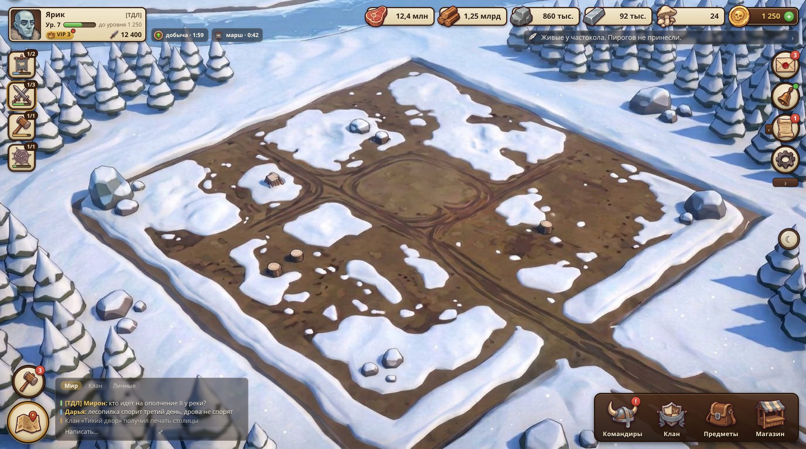
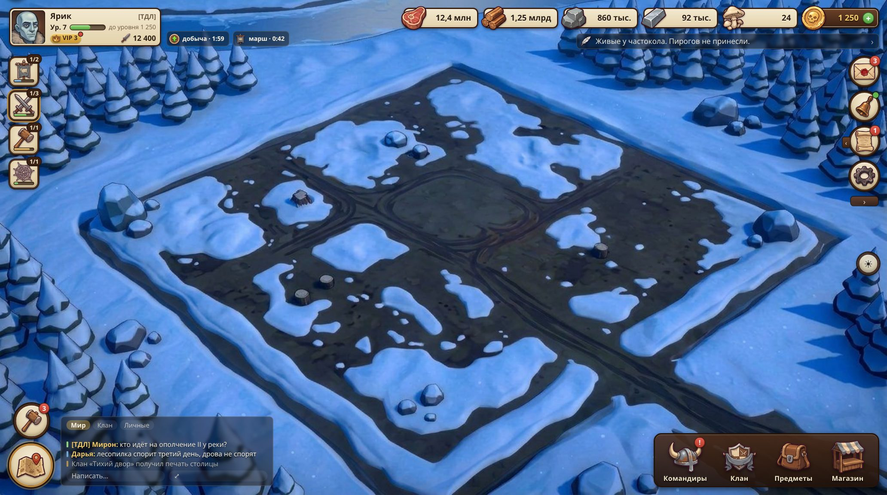
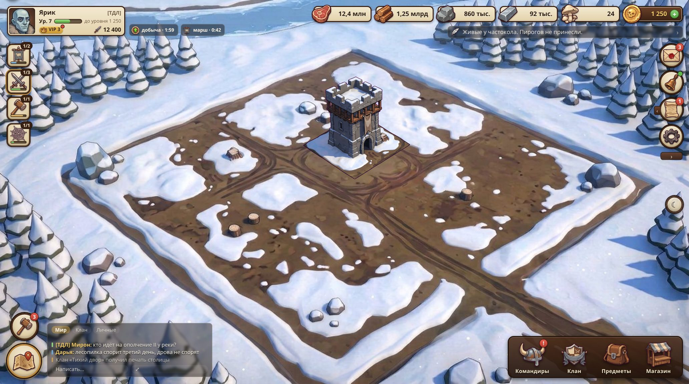
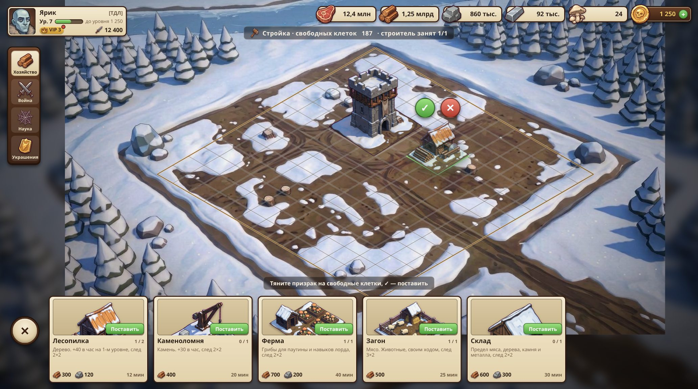
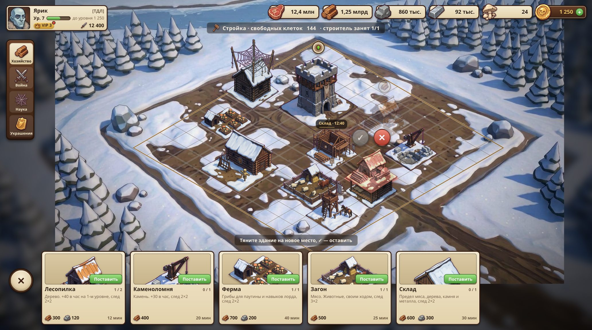
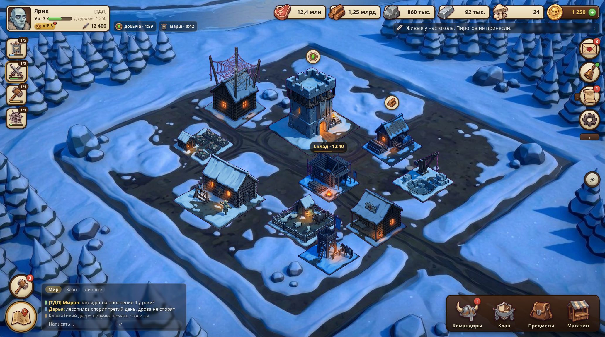
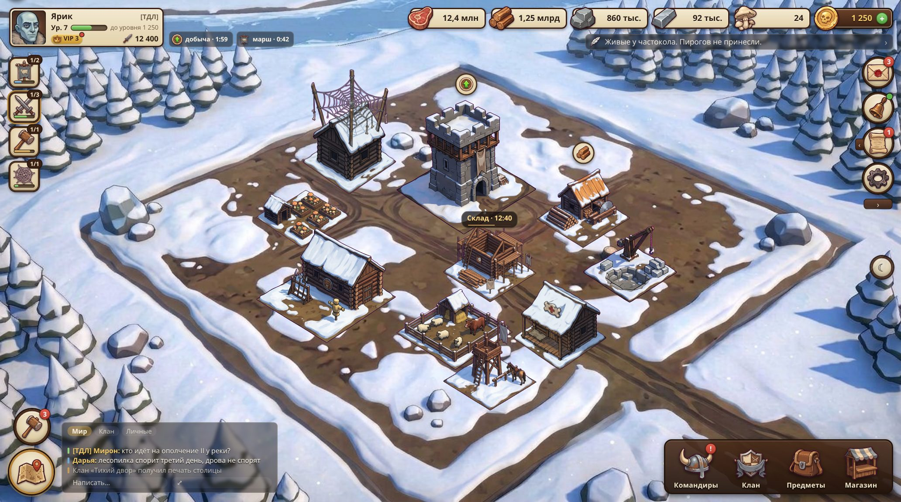
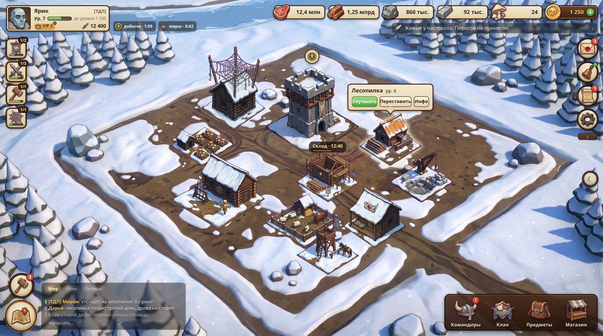
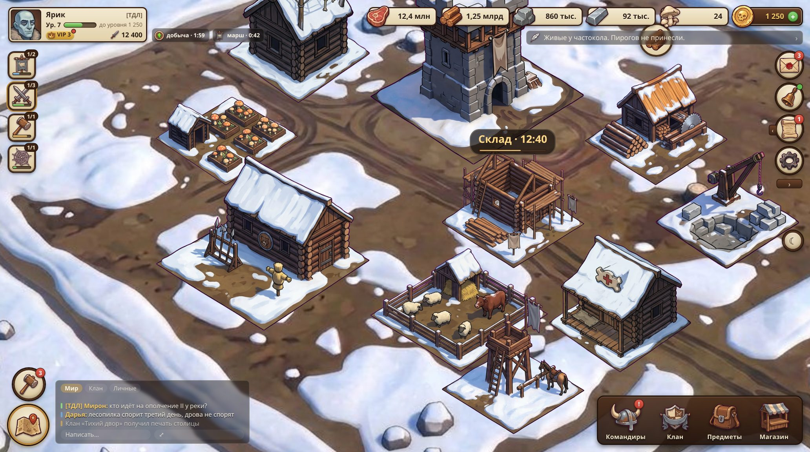

Круг 7 · двор как конструктор: земля отдельно, здания отдельно, камера свободная
Один и тот же прототип court/index.html в разных состояниях. Земля — день/ночь; каждое здание — свой спрайт с дневной и ночной версией; сетка 14×14; всё перетаскивается.

1 · Площадка без строений, деньС этого начинает игрок. Ни фонарей, ни огней — днём гореть нечему.

2 · Та же площадка, ночьОтдельная ночная земля. Интерфейс тот же.

3 · Первый день: Ратуша и частоколРешение заказчика 27.09.2026: с начала стоят Ратуша (главное здание, бывшее «Двор») и забор с воротами; остальное игрок ставит сам.

4 · Стройка: призрак лесопилкиКарточка «Поставить» → призрак на сетке, зелёный след, ✓ ставит. Клетки одинаковые по всей площадке.

5 · Стройка: перестановкаЗдание тянется пальцем; красный след и цвет — место занято, ✓ погашена.

6 · Обжитой двор, ночьОкна и фонари горят только в ночных спрайтах; стройка Склада с костром и таймером.

7 · Обжитой двор, деньТе же здания, дневной набор. Пины состояний над зданиями.

8 · Тап по зданиюПузырь «Улучшить · Переставить · Инфо». «Переставить» запускает то же перетаскивание.

9 · Свободная камера, приближение ×1,7Панорама перетаскиванием, зум колесом/щипком в пределах площадки. Спрайты остаются чёткими.